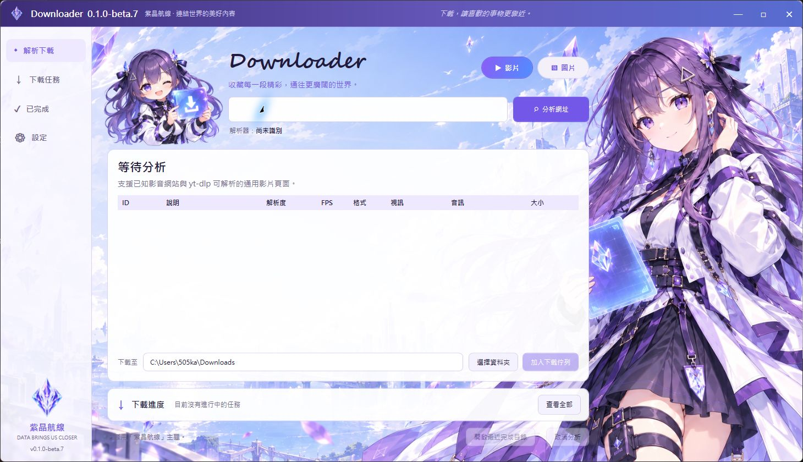
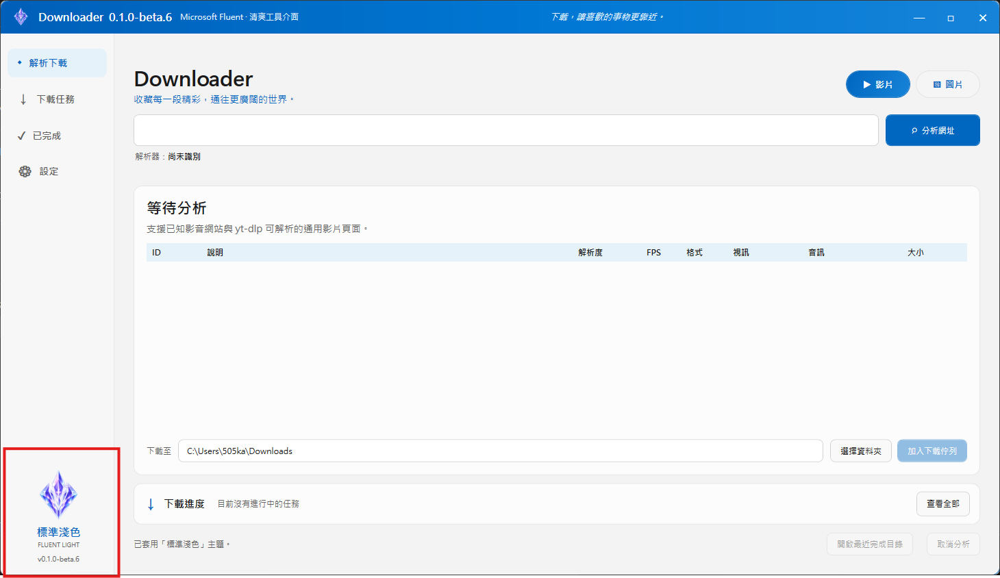

THE REAL USE CASE
為了一個當下想到的創意
迷因與社群二創的節奏很快，真正需要的通常不是整站收藏，而是眼前這一支影片、某個畫面，或單頁裡幾張適合再創作的圖片。
Downloader 是一個把單頁影片、圖片解析、登入狀態與下載任務收進同一個介面的 Windows 工具。它從一句很直接的需求開始，最後長成一套有自己角色與主題的桌面作品。

我原本要的不是一套深入爬遍整個網站的系統。有時候只是和社群一起製作二創內容或搞笑迷因影片，需要取得眼前這支影片或這個圖片頁面的素材；把網址貼進工具，確認內容與格式，然後下載。
迷因與社群二創的節奏很快，真正需要的通常不是整站收藏，而是眼前這一支影片、某個畫面，或單頁裡幾張適合再創作的圖片。
成功下載零個檔案，順便看完七個廣告、拜訪五個陌生分頁，最後再收到一句「解析失敗」。非常完整的網路探險體驗。

「我看到一個影片，當下的網址轉貼到軟體中。」— 這句話後來成為整個產品邊界
Downloader 是 Windows 10／11 x64 的免安裝桌面工具。使用者貼入正在瀏覽的單一網址，程式先辨識網站、分析媒體與列出可用格式，再由使用者決定內容、畫質及儲存位置。高頻操作保持簡單；網站差異、登入狀態、格式排序與多任務下載，交給程式在背後整理。
只處理正在瀏覽的這一頁，不自動展開播放清單、作者空間、下一頁或整站內容。
辨識 YouTube、Bilibili 與多個常見影音網站，也可交給 yt-dlp 處理支援的通用影片頁面。
解析單頁圖片並提供全選、取消、反選與逐張勾選；游標停留時再載入較大預覽。
分析與下載分開，可持續貼入下一個網址；佇列支援自動或手動啟動，以及多任務並行。
需要會員權限時使用 Downloader 自己的 WebView2 Profile，不讀取日常瀏覽器的登入資料。
.NET 8 self-contained，解析工具一併攜帶；主程式可放在 NAS、USB 或本機資料夾執行。
已知網站顯示品牌名稱，其他成功解析的頁面則直接顯示實際 Domain；通用模式仍以網站與解析引擎當下支援狀態為準。
解析完成後，畫面會先讓人確認標題、封面、解析度、FPS、格式、影音組合與預估大小；下載目的地與任務狀態也都留在同一條工作流裡。

兩種內容看似都叫下載，使用者真正要判斷的資訊卻完全不同。與其塞進同一張萬用清單，不如從入口就清楚分流。
重點是畫質、FPS、編碼、是否含音訊，以及純視訊格式下載後是否需要由 FFmpeg 自動合併最佳音訊。
重點是大量候選內容的辨認與選取，因此提供批次勾選、即時數量與按需載入的游標預覽。
第一個原型先驗證 WPF、yt-dlp 與 FFmpeg 能否組成完整流程。YouTube 與 Bilibili 有專用辨識，其他網站則保留通用入口。
開發早期陸續碰到缺少 yt-dlp、登入時間格式、Null 欄位與排序不合直覺等問題。封面預覽、開啟目錄、FPS 與影音合併標示，都是在真實測試中補出來的。
這個問題把程式從一次性工具推向任務管理。現在分析不會被下載卡住，等待任務可手動啟動，也可設定 1～10 個並行工作，自訂值上限為 99。
專案刻意不讀 Chrome 或 Edge 的既有 Profile。各 Domain 使用獨立登入環境，Cookie 由 Windows CurrentUser DPAPI 保護；軟體啟動時也不會逐站連線掃描。
當常用網站、登入、圖片多選與任務佇列都能工作，重點開始從「功能有沒有」轉向「每天打開時願不願意用」。版本在這裡進入 Beta。
從紫髮角色 ICON、CrystalDiskInfo 式角色主題參考，到整套紫晶航線預覽稿，介面經歷過比例不對、圖片拼接斷層與功能位置落差；最後把背景與右側立繪整合成同一張全景，再建立可抽換的主題 Shell。
按鈕、標題列、Chip、表格、進度列、字體、背景與側欄都會一起切換。未來新增季節或節日主題，只需要替換素材、色票與短文案，不必複製下載功能。

「紫晶航線」保留角色、城市、水晶與半透明卡片；「標準淺色」收起裝飾圖，展開工作區，以 Microsoft Fluent Light 的中性色與 Windows 藍色呈現。

這個工具將提供公開下載，但限定個人與非商業使用。它可以使用本人帳號合法觀看的內容與畫質，但不以破解網站限制為目標。
帳密直接輸入官方網站。Downloader 不記錄密碼，不讀取日常瀏覽器 Profile；交給 yt-dlp 的 Cookie 暫存檔使用後即刪除。
不整批抓播放清單、作者空間或全站內容，不繞過會員、地區、年齡與 DRM 限制；通用網站解析屬盡力而為。
Downloader 的價值不在重新發明每一個下載協定，而是替幾個能力不同的元件分工，然後把它們收進一致、可驗證的桌面流程。
發布方式會和 3MF Explorer 一樣：網站保留版本、檔案資訊與 SHA-256，Portable ZIP 則放在外部雲端空間。連結更新前，按鈕先維持等待狀態。
Windows x64 · Self-contained Portable ZIP · 解壓縮後直接執行
軟體本身不收費，也不插入廣告；可以下載供個人、非商業用途使用。
本次公開的是 Windows Portable 執行版本，不代表專案採用 Open Source 授權。
只下載自己有權存取及使用的內容；二創、迷因與社群發布仍需遵守素材授權、著作權及來源平台規範。
從「貼上網址能下載」到下載佇列、圖片預覽、獨立登入與完整主題，功能並不是一次規劃到底，而是在每次實際使用時把下一個不順手的地方問出來。Downloader 現在停在一個很舒服的位置：常用功能已經能工作，接下來可以慢慢把新主題與細節做得更像自己。
回到 Kai AI Workshop